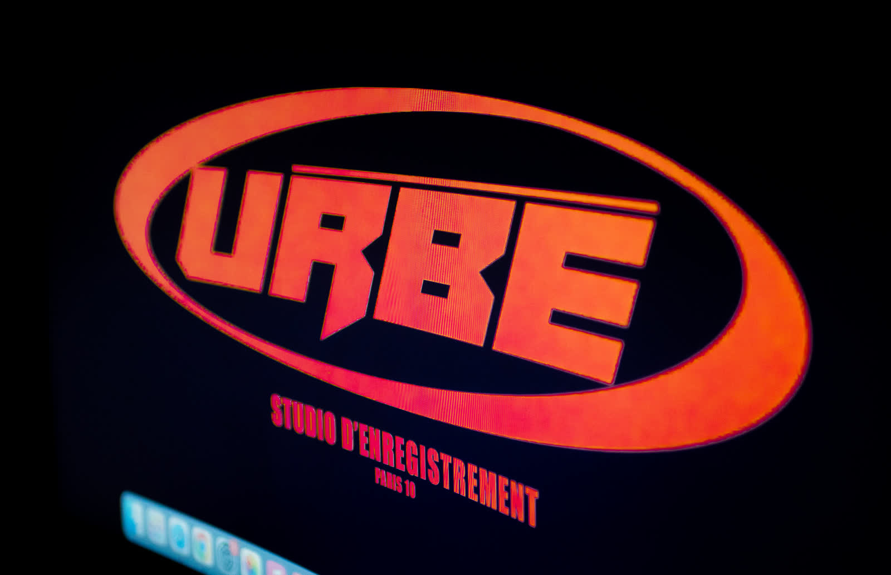

Mixage à distance : ne prenez pas de retard cet été
Vacances ne veut pas dire pause forcée. Avec le mixage à distance, vos titres avancent pendant que vous êtes en déplacement — et vous arrivez à la rentrée avec un catalogue prêt à sortir.

L'été, la période où les projets prennent du retard
Chaque année, c'est le même scénario : l'artiste part en vacances ou en tournée, le studio ferme, les délais glissent, et septembre arrive avec trois mois de projets en attente. Le mixage en ligne existe justement pour casser ce cycle — pas besoin d'être à Paris pour faire avancer un morceau.
Comment ça marche concrètement
- Vous envoyez vos multipistes depuis n'importe où — plage, tournée, chez un pote.
- Vous choisissez votre ingénieur parmi ceux d'Urbe Studio, chacun avec sa signature (rap, afro, r&b, trap, pop).
- Vous recevez votre mix sous 7 jours — ou 48h en urgence si la deadline presse.
- Vous validez à distance, retouches comprises, sans jamais mettre un pied en cabine.
Préparer sa rentrée pendant qu'on est encore en vacances
Les artistes qui sortent en septembre-octobre sont ceux qui ont mixé en juillet-août. Le mixage à distance permet de garder ce rythme : les prods s'accumulent pendant l'été, les mix suivent en parallèle, et la rentrée devient une sortie plutôt qu'un rattrapage.
Même exigence qu'en studio
Le mixage en ligne chez Urbe Studio n'a rien d'un service dégradé : ce sont les mêmes ingénieurs, le même soin sur la voix, le même travail de 808 et de low-end que pour une session en cabine à Paris. Voir notre approche sur le mixage rap à Paris et notre page mixage et mastering audio en ligne.
Envoie tes pistes avant de partir
Mix à partir de 120€ · Urgence 48h disponible · Aucun déplacement nécessaire.
Commander mon mix à distance →